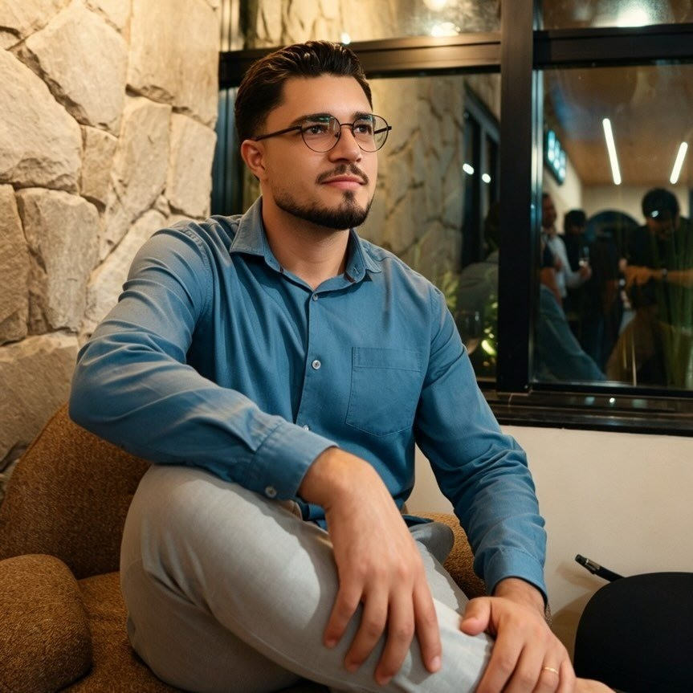

Reinaldo,
da Domus.
Minha formação é técnica eletrotécnica, e foi no contato direto com instalações, obras e clientes que comecei a construir minha trajetória, em 2018.

O trabalho começa
antes da instalação.
Ao longo desse caminho, fui entendendo que tecnologia não é simplesmente escolher um equipamento e fazer funcionar. Existe todo um trabalho por trás: entender a necessidade do cliente, avaliar o ambiente, pensar na infraestrutura, integrar os sistemas e garantir que tudo faça sentido quando estiver pronto.
E foi com essa visão que a Domus foi sendo construída. Uma empresa que busca unir conhecimento técnico, boas soluções e responsabilidade em cada entrega, sem deixar de lado aquilo que acontece depois da instalação.
Confiança construída
ao longo do tempo.
Desde 2018, já atendemos mais de mil clientes, e hoje mais de 90% dos nossos clientes chegam por indicação. Para mim, isso tem um significado muito importante: mostra o valor da confiança que construímos ao longo do tempo.
Tecnologia alinhada
à arquitetura.
E é justamente essa confiança que queremos levar cada vez mais para dentro dos projetos de arquitetura.
Nosso papel é contribuir com o conhecimento técnico, ajudar a antecipar as necessidades de cada ambiente e fazer com que a tecnologia esteja alinhada àquilo que o profissional imaginou para o projeto.
Porque, no final, não se trata de colocar mais equipamentos dentro de uma casa. Trata-se de integrar soluções que façam sentido, que funcionem bem e que melhorem a experiência de quem vai viver naquele espaço.
É essa parceria que queremos construir com vocês: uma Domus que soma ao projeto, cuida da parte tecnológica e ajuda a transformar boas ideias em experiências que funcionam na prática.